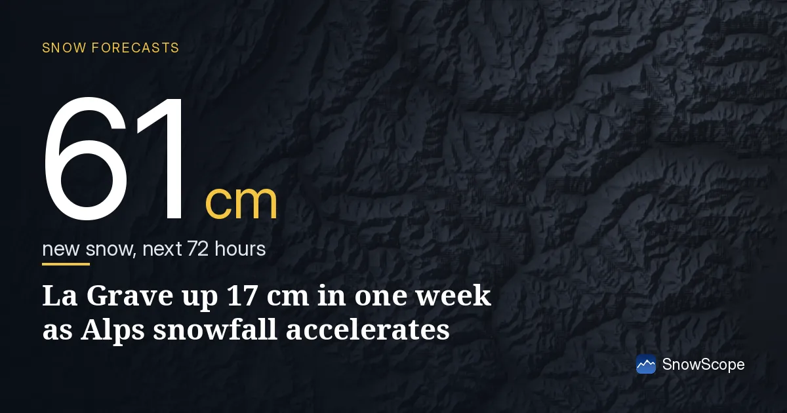
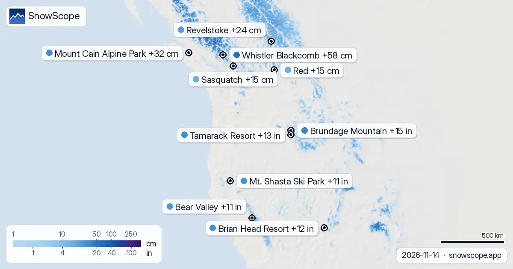

La Grave up 17 cm in one week as Alps snowfall accelerates
La Grave's snowpack has accumulated 17 centimetres over the past week, rising from 26 cm to 43 cm, with an additional 61 cm forecast over the coming three days. This week's growth marks a transition in the mountain's water balance as a strengthening precipitation system begins to replenish the Alpine snowpack.
See the live snow forecast for La Grave in the SnowScope appSnow depth, powder alerts and the 3D map, free.
Weekly accumulation: a turning point in the Alps
La Grave has captured 17 cm of water in solid form between 7 and 14 November, advancing from 26 cm to the current measured depth of 43 cm at approximately 3370 m elevation. Though still below the historical median of 70 cm for this location, the accumulation rate signals a shift in atmospheric moisture delivery.
For water resource assessment, this modest but consistent gain confirms that the high mountains are now retaining precipitation rather than losing it to rapid melting. The rate of gain—approximately 2.4 cm per day—reflects conditions typical of mid-November transition periods, when systems establish more reliable moisture transport over the range.
| # | Resort | Region | +24 h | +72 h | Snow line |
|---|---|---|---|---|---|
| 1 | La Grave | Alps · France | 26 cm | 61 cm | 2,900 m |
| 2 | Alpe d'Huez Grand Domaine | Alps · France | 27 cm | 55 cm | 2,400 m |
| 3 | Orcières Merlette | Alps · France | 30 cm | 53 cm | 2,500 m |
| 4 | Les Deux Alpes | Alps · France | 25 cm | 53 cm | 2,500 m |
| 5 | Saint François Longchamp | Alps · France | 28 cm | 52 cm | 2,400 m |
| 6 | Courmayeur | Alps · Italy | 16 cm | 48 cm | 2,400 m |
| 7 | Les Grands Montets | Alps · France | 14 cm | 48 cm | 2,500 m |
| 8 | Orelle | Alps · France | 14 cm | 48 cm | 2,500 m |
| # | Resort | Region | +24 h | +72 h | Snow line |
|---|---|---|---|---|---|
| 1 | Brundage Mountain | US West · United States | 0 in (0 cm) | 15 in (37 cm) | 6,900 ft (2,100 m) |
| 2 | Tamarack Resort | US West · United States | 0 in (0 cm) | 13 in (33 cm) | 6,900 ft (2,100 m) |
| 3 | Brian Head Resort | US West · United States | 0 in (0 cm) | 12 in (30 cm) | 12,500 ft (3,800 m) |
| 4 | Mt. Shasta Ski Park | US West · United States | 9 in (23 cm) | 11 in (27 cm) | 5,600 ft (1,700 m) |
| 5 | Bear Valley | US West · United States | 0 in (0 cm) | 11 in (27 cm) | 9,200 ft (2,800 m) |
| 6 | Dodge Ridge | US West · United States | 0 in (0 cm) | 9 in (23 cm) | 9,200 ft (2,800 m) |
| 7 | Sun Valley | US West · United States | 0 in (0 cm) | 9 in (23 cm) | 7,200 ft (2,200 m) |
| 8 | Ferguson Ridge | US West · United States | 1 in (3 cm) | 8 in (20 cm) | 8,200 ft (2,500 m) |
| # | Resort | Region | +24 h | +72 h | Snow line |
|---|---|---|---|---|---|
| 1 | Whistler Blackcomb | Western Canada · Canada | 47 cm | 58 cm | 1,200 m |
| 2 | Mount Cain Alpine Park | Western Canada · Canada | 15 cm | 32 cm | 1,100 m |
| 3 | Revelstoke | Western Canada · Canada | 5 cm | 24 cm | 1,500 m |
| 4 | Red | Western Canada · Canada | 4 cm | 15 cm | 1,500 m |
| 5 | Sasquatch | Western Canada · Canada | 0 cm | 15 cm | 1,500 m |
| 6 | Mt. Baldy Family | Western Canada · Canada | 6 cm | 13 cm | 1,400 m |
| 7 | Whitewater | Western Canada · Canada | 3 cm | 13 cm | 1,500 m |
| 8 | Kicking Horse Resort | Western Canada · Canada | 2 cm | 13 cm | 1,600 m |

Next 24 hours: uneven distribution across the Alps
Over the coming 24 hours from 15 November, fresh snowfall will distribute unevenly across the range. Orcières Merlette leads with 30 cm forecast on its upper slopes, followed by Saint François Longchamp at 28 cm, Alpe d'Huez Grand Domaine at 27 cm, and La Grave at 26 cm. Les Deux Alpes will receive 25 cm, while Courmayeur, Les Grands Montets, and Orelle will each capture 14–16 cm.
The snow line is predicted to sit between 2400 and 2900 m depending on location, meaning significant portions of each resort will receive rain rather than snow at mid-mountain elevations. The 24-hour window thus offers modest accumulation in terms of vertical extent, with gains concentrated above the transition zone.

Three-day surge: substantial mountain water input
The outlook changes markedly when extended to 72 hours through 17 November. La Grave rises to clear foreground with 61 cm forecast, reflecting the system's full moisture content as it intensifies over the highest summits. Alpe d'Huez Grand Domaine and Orcières Merlette will each receive approximately 55 cm, with Les Deux Alpes also reaching 53 cm.
Saint François Longchamp and Courmayeur will accumulate around 48–52 cm. This three-day event represents genuine water input to the high Alps; a mountain entering the period with 43 cm at La Grave could accumulate approximately 104 cm in total by mid-week, a substantial change in its hydrological budget for this stage of the season.
Comparative context from other regions
The concentration of precipitation in the Alps is not mirrored everywhere. The US West is receiving considerably less attention from this system. Brundage Mountain, the region's leader, is forecast for 15 in (38 cm) over three days but nothing in the immediate 24 hours. Mt. Shasta Ski Park will receive 9 in (23 cm) in the next 24 hours, though only 11 in (27 cm) total by day 72.
By contrast, Western Canada's resorts are tracking a more vigorous event: Whistler Blackcomb is modelled for 47 cm in the next 24 hours and 58 cm total by 17 November. This geographic disparity underscores how Atlantic and Pacific pressure patterns segregate precipitation delivery across continental scales.
Snow line placement and early-season settling
The modelled snow line through 17 November ranges from 1200 m at Whistler Blackcomb to 3800 m at Brian Head Resort, reflecting diverse weather regimes across the three regions. In the Alps, snow lines of 2400–2900 m mean that lower resort bases and mid-mountain infrastructure may still encounter mixed or wet precipitation.
At La Grave, the high elevation places all slopes well above the anticipated freezing level throughout the event, ensuring that accumulated precipitation will remain in solid form. Early-season snow tends to settle rapidly and may exhibit lower density than mid-winter equivalents; observable settling should be monitored over the 48 hours immediately following the event's conclusion.
Forecast uncertainty and risk considerations
Snowpack growth of 61 cm in three days is substantial, yet model forecasts carry inherent uncertainty—particularly early in the season when atmospheric boundary dynamics are variable and snow-to-liquid conversion ratios may differ from embedded assumptions. Local wind redistribution, aspect-dependent settling patterns, and interactions between fresh snow and existing thin cover introduce complexity beyond aggregate depth predictions.
For off-piste skiers, consultation with the official avalanche bulletin for your chosen area is essential before venturing into unmonitored terrain, as rapid loading can destabilise even shallow slopes when absolute depth remains modest by winter standards.
Tips for skiers
- Ski elevations above 2900 m in the Alps during the next 24 hours to stay on fresh snow; below this height, precipitation will transition to rain or wet snow.
- At La Grave and Alpe d'Huez, expect rapid settling over the 48 hours after precipitation ends; early-season snow compacts quickly, so slopes may stabilise faster than expected.
- Consult the official avalanche bulletin before accessing any off-piste terrain, as rapid loading of 61 cm in three days on a thin base may destabilise shallow slopes despite modest absolute depth.
- In the US West, Brundage Mountain receives 0 in (0 cm) in the first 24 hours, so conditions will not improve until day 2–3; Western Canada's Whistler Blackcomb is tracking much more vigorous immediate snowfall.
About these numbers
Resort snow depths are the deepest snow on the resort's upper slopes from the SnowScope snow model (about 1 km, run of 14 November); they are estimates for an area, not a measurement at one point. Station values are measurements on the date shown. Forecasts can change. Always read the official avalanche bulletin before going off-piste.
Official avalanche bulletins: EAWS (Europe) · avalanche.org (US) · Avalanche Canada
Cite this report
For research, teaching or the press: the numbers and charts are free to reuse under CC BY 4.0 with this citation.
SnowScope (2026), La Grave up 17 cm in one week as Alps snowfall accelerates, https://snowscope.app/blog/en/2026/11/where-most-snow-falls-next-72-hours-14-november-2026.html, accessed 2026-11-14
SnowScope (Atlas Labs). (2026, November 14). La Grave up 17 cm in one week as Alps snowfall accelerates. SnowScope snow reports. https://snowscope.app/blog/en/2026/11/where-most-snow-falls-next-72-hours-14-november-2026.html
BibTeX
@misc{snowscope2026wheremostsnowfallsnext72,
author = {{SnowScope (Atlas Labs)}},
title = {La Grave up 17 cm in one week as Alps snowfall accelerates},
year = {2026},
month = nov,
howpublished = {\url{https://snowscope.app/blog/en/2026/11/where-most-snow-falls-next-72-hours-14-november-2026.html}},
note = {Published 2026-11-14 11:39 UTC; accessed 2026-11-14}
}· CC BY 4.0 · Methods, data and tools →
La Grave: snow and temperature by height, this winter vs last (tools) →
Follow La Grave
Free: a message when fresh snow is coming, and the forecast every morning.
More snow reports

Snow is coming in France: up to 87 cm in the week ahead. Snow cover, new snow, resorts and the days ahead in France on 17 November.

Western Canada mountains carry 42% of their normal snow for mid-November as of 12 November, but 142 cm is forecast over the next two weeks.

Whistler Blackcomb saw 76 cm of new snow in the last 72 hours, with Mount Cain Alpine Park also receiving 64 cm, as of November 16, 2026.